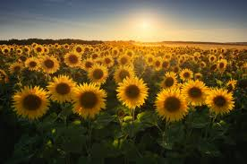
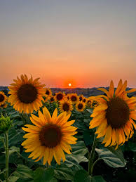

More About Sunflowers
Sunflowers are among the most stunning and meaningful flowers in nature. Their bright golden petals and tall, sturdy stems reflect warmth, strength, and positivity. Known for turning toward the sunlight, they symbolize growth, hope, and resilience in every aspect of life. Sunflowers thrive even in tough conditions, reminding us to keep reaching for the light no matter what challenges we face. Beyond their beauty, they are incredibly useful—providing seeds, oil, and inspiration for art and design. Truly, sunflowers embody both purpose and beauty in perfect harmony.
Sunflower Fun Facts
Sunflowers are tall, annual plants from the daisy family, native to both North and South America. They are admired for their bright, striking appearance and their unique ability to follow the sun throughout the day. What appears to be a single large flower is actually made up of hundreds of tiny florets—the outer ones form the yellow petals, while the inner florets mature into edible seeds. These seeds are commonly used for food and oil production, making the sunflower both beautiful and practical. Sunflowers thrive in full sunlight and are valued not only for their usefulness but also for their cheerful, decorative appeal.
More Types of Sunflowers
- More Sunflowers
- Sunflower Lifestyle
- common sunflower
- woodland sunflower
- perennial sunflower